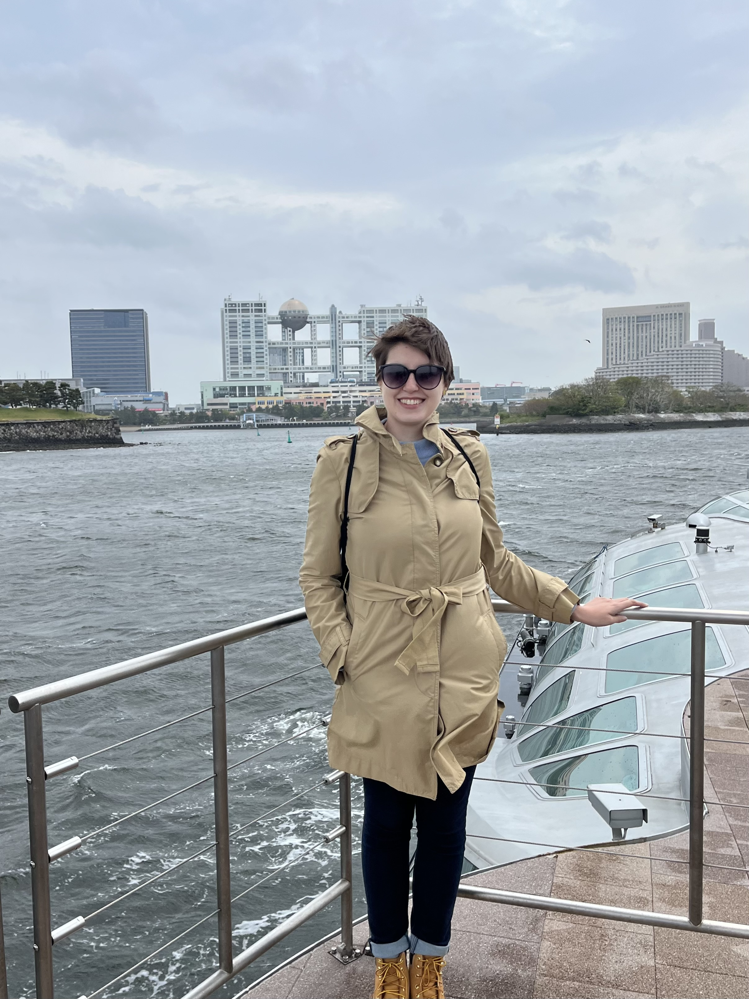

See my work

I am a 5th year PhD candidate in Mathematics at UT Austin
working with Thomas
Chen. Nowadays, I mostly spend my time thinking about
neural networks. You can find my work here.
I was previously at the University of São Paulo,
where I got a bachelor's degree in physics, and later a
master's degree in mathematics, studying gauge theory.
Here is my cv (last updated: July 2025).
News
Contact info: You can generally find
me in my office PMA
11.138 or email me at ewald at
utexas.edu.
My current areas of interest are mathematical foundations of deep
learning, and mathematical physics.
Papers
-
Gradient flow in parameter space is
equivalent to linear interpolation in
output space
(with T. Chen).
J. Geom. Phys., 222, Article No. 105765 (2026).
Journal.
arXiv.
-
Interpretable global minima of deep
ReLU neural networks on sequentially
separable data (with T. Chen).
J. Mach. Learn. Res., 26 (173): 1-31 (2025).
Journal,
arXiv.
-
On non-approximability of zero loss
global L^2 minimizers by gradient
descent in deep learning
(with T. Chen).
Theor. Appl. Mech., 52 (1), 67-73 (2025).
Journal,
arXiv.
- Geometric structure of shallow neural networks and
constructive L^2 cost minimization (with T. Chen).
Phys. D, online first.
Journal,
arXiv.
Preprints
-
Explicit neural network classifiers for non-separable data.
Submitted,
arXiv.
-
Architecture independent generalization
bounds for overparametrized deep ReLU
networks
(with T. Chen, C.-K. Chien, A.G. Moore).
Submitted,
arXiv.
-
Geometric structure of deep learning networks and
construction of global L^2 minimizers (with T.
Chen). Submitted,
arXiv.
Other
-
Compactness in gauge theory (2021). My
master's
thesis on the Uhlenbeck gauge fixing and
compactness theorems for connections on principal
bundles, pdf.
Here are a few things I find cool, useful, or informative.
-
Michael Atiyah came to USP in 2010 and gave an
interview
(text in Portuguese).
Latex
I enjoy cool software and programming, and for that reason
I like to use some fancy tools with Latex. Here are some: